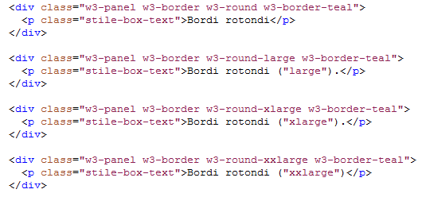

W3.CSS
Un framework CSS moderno, semplice e veloce...
W3.CSS classi dei bordi
| Classe | Definizione |
|---|---|
| w3-border | Aggiunge i bordi (top, right, bottom, left) |
| w3-border-top | Aggiunge un bordo in alto |
| w3-border-right | Aggiunge un bordo a destra |
| w3-border-bottom | Aggiunge un bordo in basso |
| w3-border-left | Aggiunge un bordo a sinistra |
| w3-border-0 | Rimuove tutti i bordi |
| w3-border-color | Mostra il bordo con un colore specifico |
| w3-hover-border-color | Aggiunge un bordo "hoverable" colorato |
| w3-bottombar | Aggiunge un bordo spesso in basso all'elemento |
| w3-leftbar | Aggiunge un bordo spesso a sinistra |
| w3-rightbar | Aggiunge un bordo spesso a destra |
| w3-topbar | Aggiunge un bordo spesso in alto |
W3.CSS bordi
Bordo normale.
Bordo di colore rosso
Bordo blu a sinistra.
Bordo verde in alto e in basso.
Bordo rosso a sinistra con sfondo rosa.
W3.CSS bordi
Bordi rotondi
Bordi rotondi ("large").
Bordi rotondi ("xlarge").
Bordi rotondi ("xxlarge")

W3.CSS bordi
Il bordo cambia colore se passato dal mouse.
Il bordo rosso cambia colore se passato dal mouse.